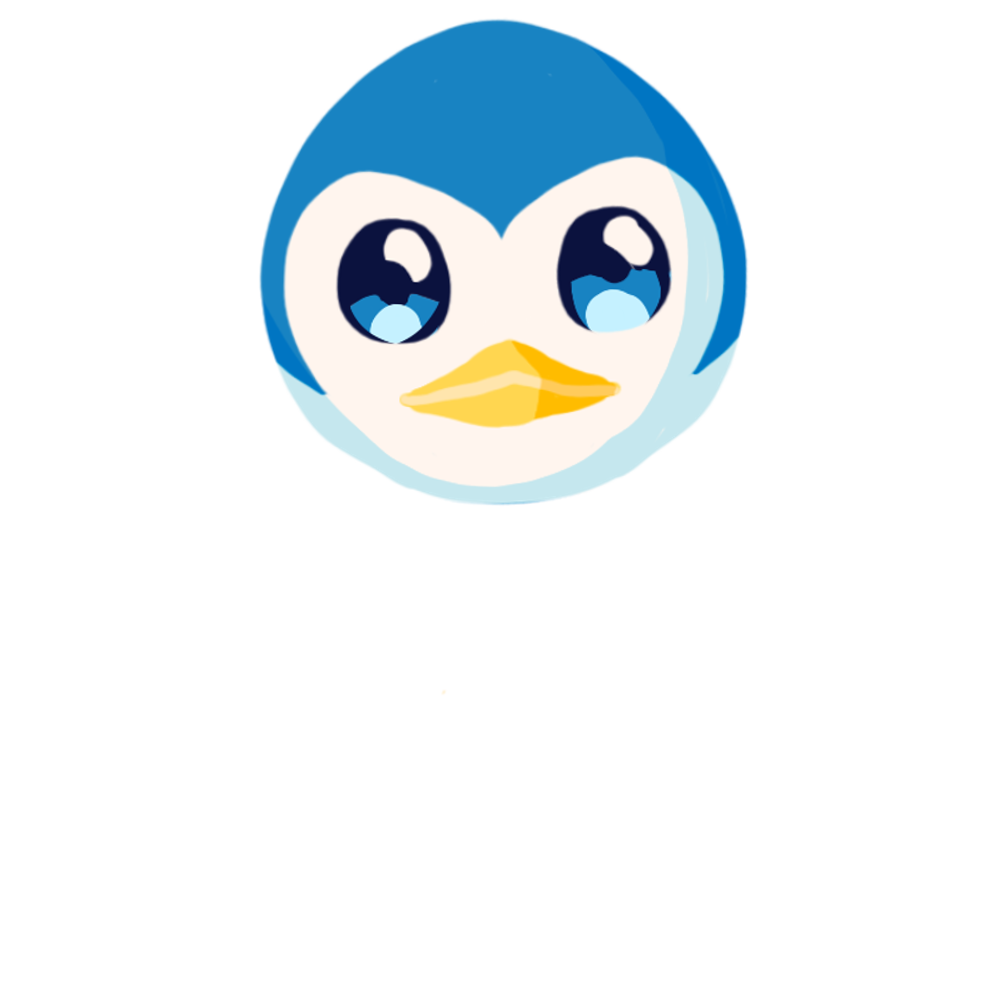
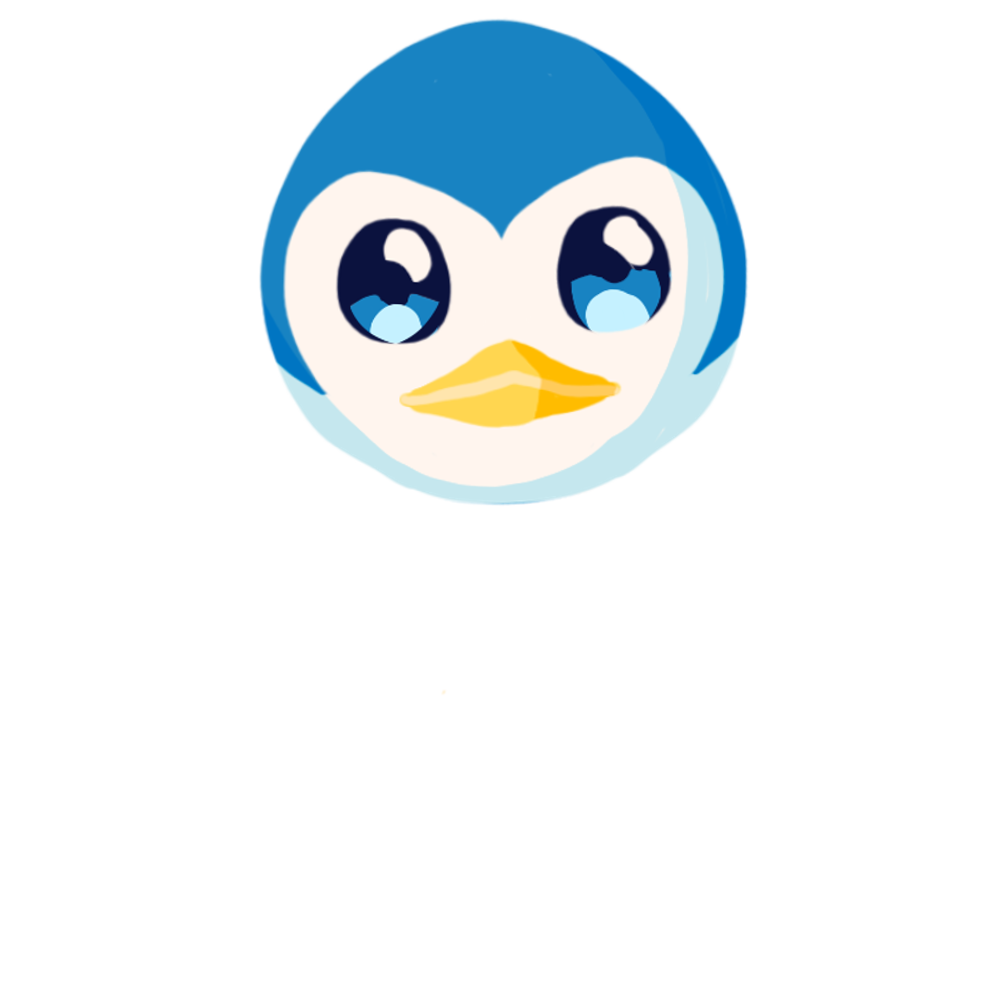

 Last updated: October 11, 2025
Status: In Progress
The most amazing second quarter mascot in existence! üî•
Its name came from its most obvious and unique movement, it's waddle.
Wada likes gliding on its tummy, listening to music, dancing, and being silly.
What's Wada's favorite quote? "Mahna Mahna, Do doo be-do-do" from the Muppets. üòÅ